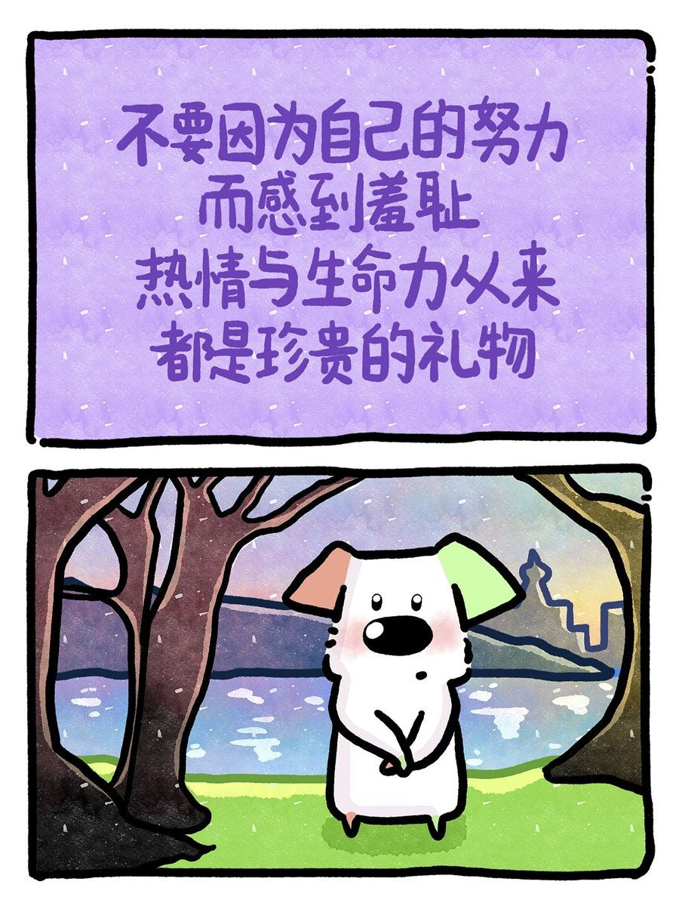

大狐帝国史官邹智萱（笔名段歌文）
@Rococo90933671
RT @snki2025: 小时候经常因为自己专注用心被人取笑愚蠢，被孤立加上懒惰让我将努力看作一个很恶心的名词，听到努力我就好像看到了无功而返，看到了蠢货在我旁边嗤笑：“浪费了那么长时间，不还是无用功，就是爱装B”。
你的专注和用心让别人将对自己的羞耻和愤怒发泄到你的身上，…

孙恺🍖🍔🍤🥕🌾
@snki2025
小时候经常因为自己专注用心被人取笑愚蠢，被孤立加上懒惰让我将努力看作一个很恶心的名词，听到努力我就好像看到了无功而返，看到了蠢货在我旁边嗤笑：“浪费了那么长时间，不还是无用功，就是爱装B”。
你的专注和用心让别人将对自己的羞耻和愤怒发泄到你的身上，你不得不学着一起去抱怨为努力羞耻。 https://t.co/3aduhyPt0q